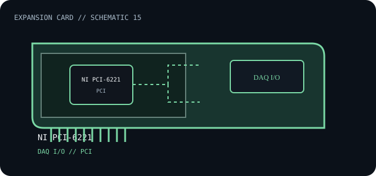

[ INDIVIDUAL COMPONENT // EXPANSION CARDS ]
NI PCI-6221
PCI M Series multifunction data-acquisition card for analog, digital, and counter/timer I/O. This is a model-specific catalog entry; confirm the exact label and revision before use.

IDENTIFICATION: Match the full model/part number and board revision to the label. Port and bus information below is included only where the linked manufacturer or standards documentation supports it; revisions and platform support may differ.
Specifications and service checks
| Catalog subcategory | Data-acquisition cards |
|---|---|
| Exact model / part identifier | PCI-6221 (M Series data acquisition device) |
| Bus / host interface | PCI |
| Verified interfaces / protocols | NI specifications list 16 analog inputs, two analog outputs, 24 digital I/O lines and two 32-bit counter/timers; verify rates and ranges in the model specification. |
| OS / driver / firmware caveat | NI-DAQmx version and OS support are release-specific. Check the NI-6221 support matrix and the host motherboard PCI voltage/keying before installation; legacy PCI slots are not interchangeable with PCIe. |
| Service note | Record calibration status, terminal block/accessory model, DAQmx driver version and channel configuration. Use ESD precautions and avoid wiring field signals until the device range, ground reference and connector pinout are checked. |
Installation and archival notes
- Record the board model, revision, serial/date code, firmware, bracket, accessories, and the documentation revision used to identify the unit.
- Confirm the host slot's electrical wiring/keying, required power, supported OS/driver, and any platform or option-ROM restriction in the cited model documentation.
- Use ESD precautions. Do not infer pinout, compatibility, protocol, boot support, or revision equivalence from a similar connector or product-family name.
Record calibration status, terminal block/accessory model, DAQmx driver version and channel configuration. Use ESD precautions and avoid wiring field signals until the device range, ground reference and connector pinout are checked.
Model-specific sources
- NI — PCI/PCIe-6221 specificationsModel-specific PCI-6221 channel counts, rates, electrical specifications and host interface.
- NI — PCI-6221 device documentationDAQmx, installation, accessory and operating-system documentation.
Source links are selected for this exact model or its manufacturer-documented family. Review the source revision and your card's printed identifiers before service.